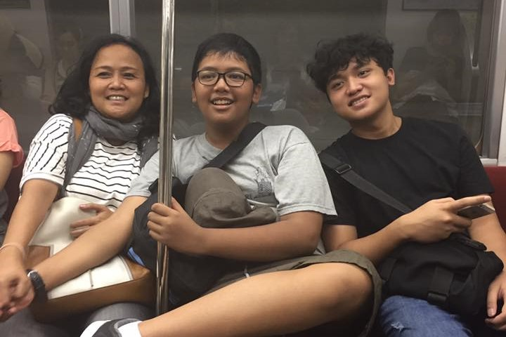
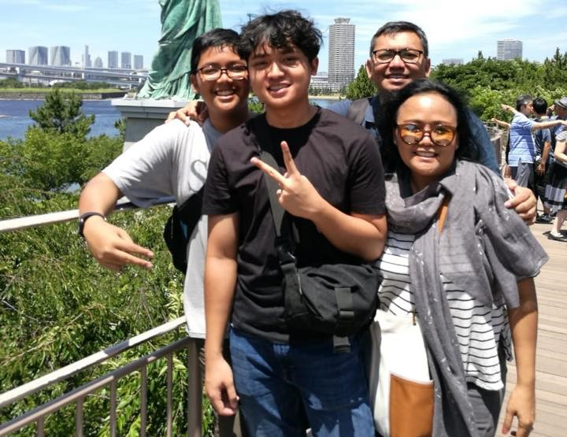

Nama panjang: Michael Dimas Budiyanto
Tempat/Tanggal Lahir: Jakarta, 11 Maret 2005
Alamat: Jalan Kalimantan X Blok F4/8, BSD
Sekolah: Santa Ursula BSD
Pendidikan: SMA
 Reading books is usually what i do in my free time. I like to read a lot of mangas, manhwas, and manhuas.
I usually don't care what the genre is about, as long as it's good, i will read it.
However, that doesn't mean that i don't have a favorite genre. My favorite genre is mystery.
I like a story where we as a reader don't know where the story would go.
We just sit there and watch as the story continues with lots of twists.
Murder mystery is especially my favorite. That is why i have read all the available chapters of doctor conan.
Reading books is usually what i do in my free time. I like to read a lot of mangas, manhwas, and manhuas.
I usually don't care what the genre is about, as long as it's good, i will read it.
However, that doesn't mean that i don't have a favorite genre. My favorite genre is mystery.
I like a story where we as a reader don't know where the story would go.
We just sit there and watch as the story continues with lots of twists.
Murder mystery is especially my favorite. That is why i have read all the available chapters of doctor conan.
 Dota 2 is one of the games that i play. I have been playing it since 2016, and i have over 4.000 hours played.
This is my favorite game and i feel that it will stay like that for many years to come. Right now (December 3 2021)
I am a divine rank player! If you want to play together, here is my friend id 324140702.
Dota 2 is one of the games that i play. I have been playing it since 2016, and i have over 4.000 hours played.
This is my favorite game and i feel that it will stay like that for many years to come. Right now (December 3 2021)
I am a divine rank player! If you want to play together, here is my friend id 324140702.
 I like to watch a lot of movies. I watch a variety of them but what i usually get hyped about are marvel films.
As a kid growing up, i have watched a lot of them, and that made them feel more special.
My bias aside, marvel studios has made a wonderful job making the movies,
so much so that even if you haven't watched the other movies, you can enjoy it too.
I like to watch a lot of movies. I watch a variety of them but what i usually get hyped about are marvel films.
As a kid growing up, i have watched a lot of them, and that made them feel more special.
My bias aside, marvel studios has made a wonderful job making the movies,
so much so that even if you haven't watched the other movies, you can enjoy it too.
 I like to eat a variety of foods, drom a lot of different places.
I like to eat western food, Indonesian food, but my favorite are Japanese food.
The Japanese food that i like most are takoyaki, and ramen.
I usually get them at a Japanese restaurant, but my favorite Japanese restaurant which serves the best dishes is Echigoya in Blok M.
The cook in Echigoya is from Japanese, so you can get an authentic Japanese in Indonesia.
It is relatively cheap, and according to my opinion they serve the best Japanese food in all of Indonesia.
I like to eat a variety of foods, drom a lot of different places.
I like to eat western food, Indonesian food, but my favorite are Japanese food.
The Japanese food that i like most are takoyaki, and ramen.
I usually get them at a Japanese restaurant, but my favorite Japanese restaurant which serves the best dishes is Echigoya in Blok M.
The cook in Echigoya is from Japanese, so you can get an authentic Japanese in Indonesia.
It is relatively cheap, and according to my opinion they serve the best Japanese food in all of Indonesia.